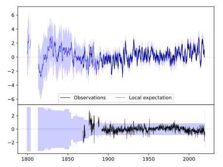
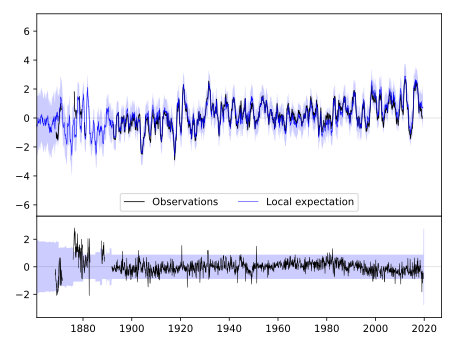
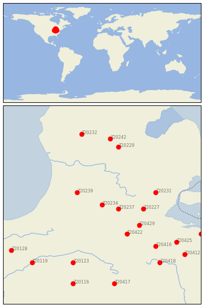

COLDWATER ST SCHOOL [USA]


| Neighbour | Name | Country | Distance | Lon/Lat | Years |
|---|
| 720234 | COLDWATER ST SCHOOL | USA | 0 | -85.0, 42.0 | 1868-2019 |
| 720237 | HILLSDALE | USA | 34 | -84.6, 41.9 | 1880-2019 |
| 720239 | KALAMAZOO STATE HOSP | USA | 59 | -85.6, 42.3 | 1876-2019 |
| 720227 | ADRIAN 2 NNE | USA | 83 | -84.0, 41.9 | 1870-2019 |
| 720422 | DEFIANCE | USA | 92 | -84.4, 41.3 | 1887-2019 |
| 720429 | WAUSEON WTP | USA | 93 | -84.1, 41.5 | 1870-2019 |
| 720231 | ANN ARBOR U OF | USA | 112 | -83.7, 42.3 | 1854-2019 |
| 720416 | FINDLAY WPCC | USA | 155 | -83.7, 41.0 | 1886-2019 |
| 720229 | ALMA | USA | 159 | -84.6, 43.4 | 1887-2019 |
| 720123 | MARION 2 N | USA | 166 | -85.7, 40.6 | 1885-2019 |
| 720242 | MT PLEASANT UNIV | USA | 178 | -84.8, 43.6 | 1887-2019 |
| 720425 | TIFFIN | USA | 180 | -83.2, 41.1 | 1873-2019 |
| 720232 | BIG RAPIDS WTR WKS | USA | 193 | -85.5, 43.7 | 1887-2019 |
| 720418 | KENTON | USA | 194 | -83.6, 40.6 | 1862-2019 |
| 720119 | DELPHI 2 N | USA | 210 | -86.7, 40.6 | 1893-2019 |
| 720417 | GREENVILLE WTP | USA | 212 | -84.7, 40.1 | 1886-2019 |
| 720412 | BUCYRUS | USA | 213 | -83.0, 40.8 | 1889-2019 |
| 720423 | NORWALK WWTP | USA | 214 | -82.6, 41.3 | 1861-2019 |
| 720116 | ANDERSON SEWAGE PLT | USA | 219 | -85.7, 40.1 | 1893-2019 |
| 720128 | RENSSELAER | USA | 220 | -87.2, 40.9 | 1864-2019 |